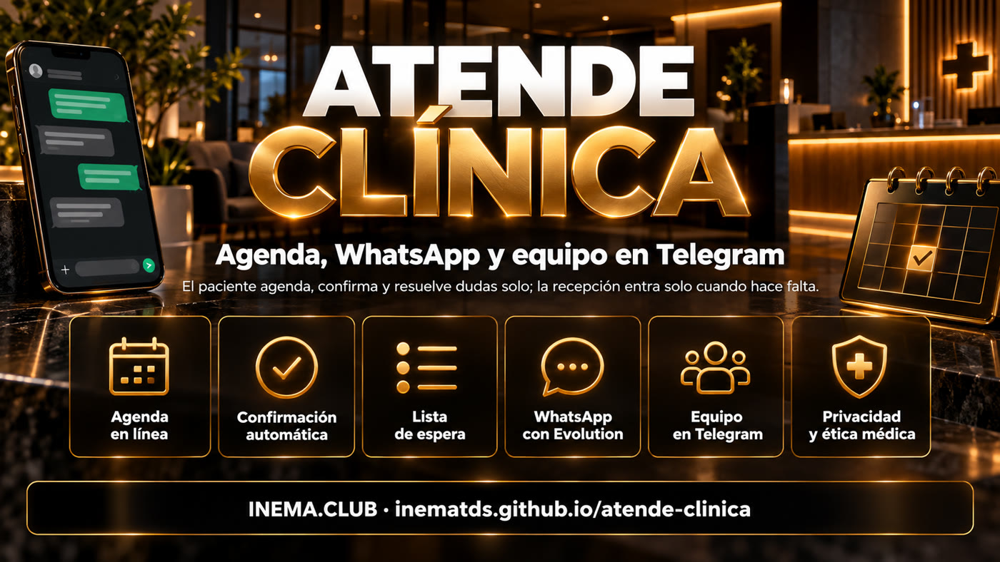

Agenda en línea, confirmación automática, lista de espera y retorno programado. El paciente conversa por WhatsApp (Evolution) o por el chat del sitio, y el equipo toma el relevo por Telegram cuando hace falta. Todo en un contenedor Docker, con las reglas brasileñas de la LGPD (ley de privacidad de Brasil) y de los consejos profesionales ya integradas.
Menos ausencias, menos teléfono sonando, más pacientes que regresan
La ausencia sin aviso es la fuga nº 1 de una clínica: entre 5 y 12% en una agenda bien cuidada, cerca de 25% en promedio. Atende Clínica la ataca con las piezas de la receta "Agenda llena" del Raio-X de Margem y devuelve las cifras del mes al panel de recuperación.

📅 Una agenda que se defiende sola
Horario por profesional, descansos y vacaciones, confirmación 48 h antes con "1 confirma / 2 cancela". Quien cancela libera el horario para la lista de espera al instante, y el retorno (p. ej., limpieza cada 180 días) se recuerda solo.
💬 WhatsApp y chat con un mismo cerebro
El paciente agenda, reprograma y resuelve dudas con las preguntas frecuentes de la clínica. El bot no inventa precios ni diagnósticos. Si piden hablar con una persona, hay una emergencia (indica llamar al 192, número de emergencias de Brasil) o quedan dos dudas sin respuesta, el caso pasa al equipo.
🛡️ Reglas de salud de fábrica
Campaña solo para quien dio su consentimiento, y el texto pasa por el control de los consejos profesionales de Brasil (CFM, CFO, COFFITO): precio, pago en cuotas, sorteos, "antes y después", "resultado garantizado". El paciente puede escribir "PARAR", exportar sus propios datos o pedir su eliminación (LGPD, ley de privacidad de Brasil).
Cómo funciona
Del "hola" en WhatsApp a la cita confirmada
Un servidor Python sin dependencias, con base de datos SQLite en un volumen Docker. Evolution y Telegram entran por variables de entorno; sin ellas, el sistema funciona con una bandeja de salida simulada.
WhatsApp (Evolution) o chat del sitio→Conversación: preguntas frecuentes, agendar, confirmar→Agenda + lista de espera→Recordatorios y retornos→Equipo en Telegram / recepción→Cifras del mes para el Raio-X
Paciente
WhatsApp o chat del sitio. Agenda en los 3 primeros horarios libres, responde a la confirmación, entra en la lista de espera y recibe el recordatorio de retorno.
Equipo
Grupo de Telegram: recibe cada atención como #id, responde sobre el mensaje o con /responder (responder), y usa /fila (cola), /agenda y /encerrar (cerrar).
Recepción (web)
Página /recepcao con token: agenda por período, registros de pacientes, profesionales, servicios y preguntas frecuentes, bloqueos, cola humana, campañas e indicadores (interfaz en portugués).
Requisitos previos
Lo que necesitas
Para probar en tu computadora basta con Python. Para producción, una VPS con Docker y, si quieres los canales, una Evolution API y un bot de Telegram propios.
Python 3.10+
Solo la biblioteca estándar: nada de pip install.
# verificarpython3 --version
Docker + Compose (VPS)
Imagen python:3.12-slim, puerto solo en 127.0.0.1, detrás de un proxy HTTPS (Nginx, Caddy).
# verificardocker compose version
Evolution API y bot de Telegram (opcionales)
Una instancia de Evolution conectada al WhatsApp de la clínica y un bot (BotFather) en un grupo del equipo. Las credenciales quedan solo en el .env.
# plantilla de variablescp .env.exemplo .env
Guía de uso · paso a paso
Del clon a WhatsApp respondiendo
Los comandos de abajo son los del repositorio. Empieza en local, sin integraciones; conecta Evolution y Telegram al final.
1
Descarga y configura la clínica
Copia el ejemplo y edita dados/clinica.json: nombre, consejo profesional de Brasil (cfm, cfo, coffito o estetica), token propio, horarios, feriados, profesionales, servicios (con retorno_dias) y preguntas frecuentes.
git clonehttps://github.com/inematds/atende-clinica && cd atende-clinica
mkdir -p dados && cp exemplos/clinica.json dados/clinica.json
2
Levanta en local y prueba el chat
Abre http://127.0.0.1:8080/ para el chat del paciente y /recepcao para el equipo (pide el token del clinica.json).
./atende serve --porta 8080 --dados dados # 1.ª línea: PORTA=8080
3
Activa los recordatorios
Las confirmaciones, retornos y reenvíos salen cuando se llama a /api/tarefas/rodar. Pon una llamada en el cron cada 5 minutos (la operación es idempotente).
El volumen ./dados guarda la base de datos; el servicio se reinicia solo y publica únicamente 127.0.0.1:8080. Apunta el proxy HTTPS a ese puerto, incluyendo /api/ y /webhook/.
Completa EVOLUTION_URL, EVOLUTION_API_KEY, EVOLUTION_INSTANCIA y WEBHOOK_SEGREDO. En la instancia, apunta el webhook a tu URL pública y activa el evento MESSAGES_UPSERT. Los grupos, los mensajes de la propia clínica y los reenvíos se ignoran.
# webhook de la instancia Evolutionhttps://SEU-DOMINIO/webhook/evolution/<WEBHOOK_SEGREDO>docker compose up -d --force-recreate
6
Suma al equipo en Telegram
Crea el bot, agrégalo al grupo del equipo y completa TELEGRAM_API_URL, TELEGRAM_TOKEN, TELEGRAM_CHAT_ID y TELEGRAM_SEGREDO. Registra el webhook con el mismo secreto.
curl -X POST "https://api.telegram.org/bot<TOKEN>/setWebhook" \
-H "Content-Type: application/json" \
-d '{"url":"https://SEU-DOMINIO/webhook/telegram","secret_token":"<TELEGRAM_SEGREDO>"}'# en el grupo: /fila · /agenda 2026-10-07 · /responder 3 Ya te llamo · /encerrar 3
7
Respaldo diario y cifras del mes
El respaldo es una instantánea consistente (puede ejecutarse con el servidor encendido) y contiene datos personales: guárdalo con acceso restringido. El comando raiox registra el mes en el archivo de seguimiento del Panel de Recuperación.
./atende backup --dados dados --saida backups/clinica.zip
./atende restaurar --dados dados --entrada backups/clinica.zip # con el servicio detenido./atende raiox --dados dados --mes 2026-10 --acompanhamento acompanhamento.json
Ejemplos
Pantallas reales del sistema
Capturadas del propio Atende Clínica funcionando con la clínica de ejemplo (odontología, Dra. Ana y Dr. Bruno). La interfaz está en portugués.
Chat del paciente (interfaz en portugués): elige el servicio, recibe los 3 primeros horarios libres y agenda con dos respuestas. El mismo diálogo ocurre en WhatsApp.Recepción (interfaz en portugués): agenda por período y profesional, asistencia y falta con un clic, además de cola humana, registros, campañas y Raio-X.
Hoja de ruta
Dónde está y hacia dónde va
La v1 se hizo con una ejecución larga de agente (método execucao-longa) frente a 93 pruebas de aceptación congeladas, y se verificó después en una clínica que el agente nunca vio y con un docker build real.
v1 ✅
Atención completaAgenda, confirmación, espera, retorno, preguntas frecuentes, cola humana, emergencia, campañas con control de los consejos profesionales de Brasil, LGPD, registros, bloqueos, respaldo, Evolution, Telegram, Docker y exportación al Raio-X.
Siguiente
Piloto en una clínica realConfigurar horarios, servicios y preguntas verdaderos, medir 4 semanas de ausencias (el "antes") y dar seguimiento en el Panel de Recuperación.
Después
Más canales y respuestasRespuestas con IA detrás de una opción desactivada por defecto, seña por Pix y planes (requieren integración de pagos) e interfaz en inglés y español.